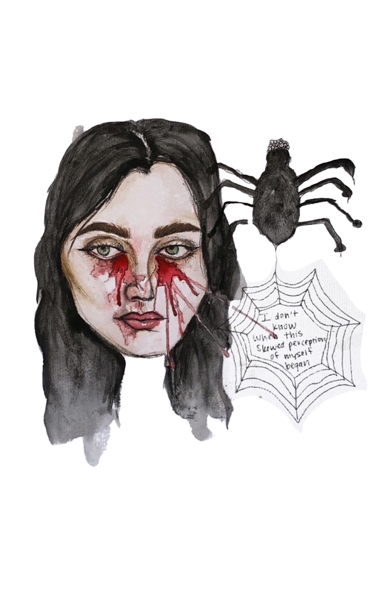

Our perception of ourselves is not in isolation during a singular moment, rather it forms through entanglements of experiences, reactions of others, and current feelings.
Various factors involved in self-evaluation creates a dynamicity to the notion of self but also leaves our perception skewed at times. “We are the best!” “We are the worst.”
These notions are bound to be inexact because as humans we do not encapsulate one entity entirely. We are nothing through and through; rather, we are everything partially.
